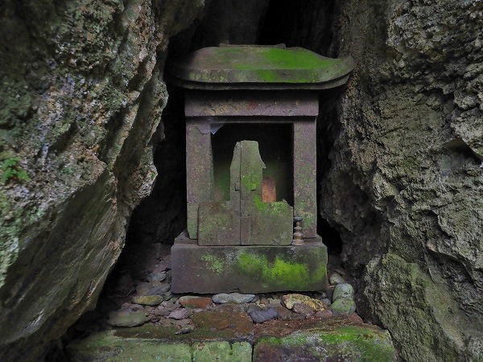
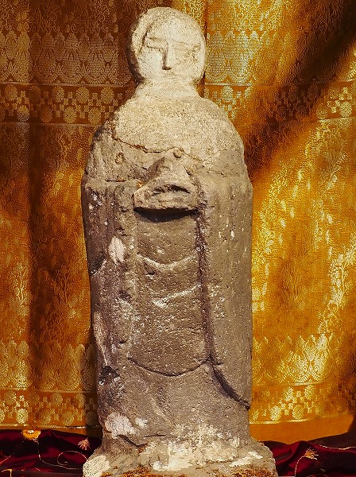
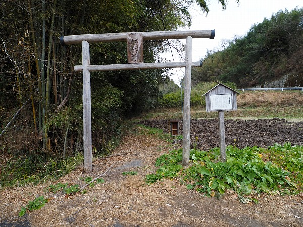
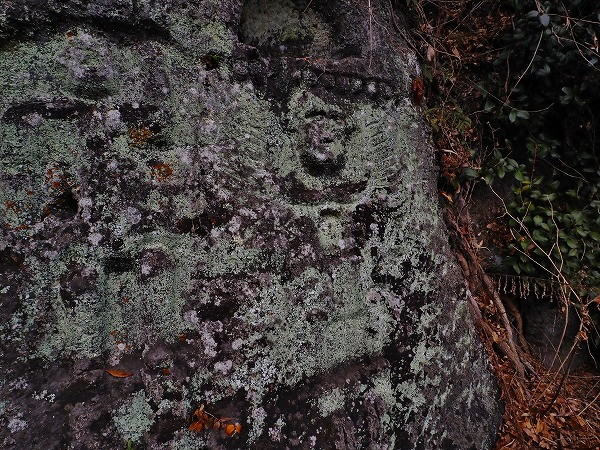

大分県竹田市。
大分県の南部に位置し、熊本県阿蘇市や宮崎県高千穂町とも隣接する何やら神秘的なエリアだ。
その竹田市は
知られざるかくれキリシタンの里だ、というハナシを聞きつけ行ってみることにした。
これまで長崎県生月や熊本県天草などいわゆるかくれキリシタン（今は潜伏キリシタンっていうんでしたっけ？）の遺構を訪れてきたかくれキリシタン大好きな私としては
かなりテンションアゲアゲな感じで竹田入りして参りましたよ。
で、まず訪れたのは
キリシタン洞窟礼拝堂。
竹田市街の武家屋敷の裏手にある洞窟である。
ここは県指定の史跡にも指定されており、かつてキリスト禁教時代にキリスト教の神父が隠れていた場所とされる。
小さな入口で、中も3メートル程度の小さな洞窟だ。
ここでひっそりとキリスト教徒が集っていたのだろうか。
洞窟の奥には小さな祭壇があった。
小さな祭具のようなものがあったがそれが何かは確認できなかった。
次に訪れたのが
岩下火伏稲荷神社。
竹田駅のすぐ裏にある神社だ。
創建は明治初期。
大正13年に豊肥線が開通し、竹田駅が出来た際に参道は急な階段になってしまったという。
竹田の街からみると、駅の裏はまさに急峻な崖。
駅の裏が滝って凄くないですか？
そんな崖の中腹にある岩下火伏神社。
ここもキリシタン遺構の可能性があるという。
理由は岸壁の掘り方。
先程のキリシタン洞窟礼拝堂と見比べていただきたい。
火頭窓のような彫り込みの上に三角屋根のような切り込み。
よく似ているではないか。
このような形状の洞窟や神社が市内には数か所あるという。
ひょっとしたらここもかつてはキリシタンの礼拝堂だった洞窟を明治になって神社に転用したものかも知れない…と想像が膨らみますねー。
次に訪れたのは市街から10キロほど南西にある
籠目権現。
ここに不思議な石像があるという。
山間の道にポツンと「籠目権現」という額が掲げられた鳥居がある。
その鳥居を潜ると谷底へと続く山道がある。
本当にこの先に何かあるんだろうか？
と不安になって来た頃に小さなお堂が現れる。
さらにそのお堂の奥に小さな滝が現れる。
滝というか水がチョロチョロ流れている程度なのだが。
その流れ口に不思議な石像がある。
コレが籠目権現だ。

権現像の上には小さな石祠がある。
その中には
十字を象ったようなものがある。
一見、水が流れている場所だけに不動明王の剣を象ったモノかな、と思ってしまうが、キリスト教の盛んだった竹田ゆえに
十字架を宝剣に模して祀ってあると考えられなくもない。
実際のところ判りませんけどね。
その十字架のような宝剣の前にはこんな石像が。
うむー。
これは何でしょう？
見ようによっては
古代ローマの戦士のような異国風のいでたち。
剣は持っているがとても不動明王には見えない。
これもまた謎の石像である。
夢中になってよじ登ってきたが、苔が凄いし湿ってるし、下りるのは結構大変でした…。
次に訪れたのは竹田市街の
竹田キリシタン研究所・資料館。
ここは竹田市のキリシタンの遺構を研究、展示する施設である。
駅前の商店街にあり、ここも商店の居抜きっぽい感じで観光案内所も兼ねた親しみやすい雰囲気だ。
しかし、中に入るとただの町おこし的な施設ではないことはすぐに判る。
最初に目に入ったのはこちらの像。
山の神。
これは10年以上前に千葉の国立歴史民俗博物館の展示で見たことがあるぞ！
その時は「山の神 大分県 複製」というキャプションしかなくて何が何だかサッパリ判らなくて、その割に見た目のインパクトが凄すぎて強烈な記憶だけが残っていた。
説明によるとこの二体の山の神も複製で、現物は竹田市内の庄屋宅にあるそうな。
一般的な認識では
鳥の姿をした山の神という認識なのだが、そんな山の神など見たことも聞いたこともない。
個人的には
竹田市は今すぐこの山の神を市のマスコットキャラクターにすべきだ、と思っている。
日本の信仰シーンで
これだけインパクトが強烈で唯一無二なオリジナリティに溢れた神様はそうそういないもの。
そんな素敵な神様をキャラとして使わない手はないでしょう。ね？竹田市御中。
この神像、一説にはキリシタン信仰に用いられたのではないか、という説もあるのだ。
右の大きな方の神像は
ひとつ目。
それだけでもインパクトは凄い。
日本ではひとつ目と言えば製鉄に関連する妖怪や神様がほとんどだと思うのだが、この資料館の説明では、目が丸いのは「マリア」に由来しているのではなかろうか、となっていた。
真偽はともかく異形の石像であることは間違いなく、そしてこのような神像は他のどの地域でも見ることはない。
小さな方の神像。
怪獣みたいだ。
手をクロスするように組んでいる。
このポーズからもキリシタン遺物の可能性を含んでいる、と説明書きにはあった。
館長さんがいらっしゃったので話を聞いてみた。
この竹田はかつての岡藩の城下町で、元々藩主がキリシタン大名だったこともあり、
キリスト教の布教が盛んだったという。
で、ここからが興味深いハナシ。
江戸時代に入って全国的にキリスト教が禁教になってからもこの竹田にはかくれキリシタン（潜伏キリシタン）がいただけでなく,、
藩ぐるみでキリスト信仰を隠していたらしい。
…と館長は考えているのである。
まさにかくれキリシタンならぬ
かくしキリシタン、という訳だ。
にわかには信じられない話だが、例えば冒頭に紹介したキリシタン洞窟礼拝堂は武家屋敷に近いばかりか
藩の重臣の敷地内にあるのだという。
それだけでも藩とキリスト教の関連性が伺われる。
岡藩時代の様々なエピソードや物証と思われる展示が次から次へと現れる
（岡藩が使用していた踏み絵）
藩の信頼も厚い豪商である垂水屋で踏み絵を行っていたら、人数が多すぎて床が抜けてしまい
地下室からマリア像が現れたという。
主人は長崎に送られたが、その後周辺の商家にある地下室までは調査されなかったという。
これもまた
キリシタンをあぶり出すことにあまり積極的でなかった藩の姿勢が垣間見える。
…というのだ。館長が。

マリア観音。
弥勒菩薩だが台座の中が刳り貫かれている。

キリシタンの墓にある地蔵（レプリカ）。
普通地蔵像は足を衣で覆っているが、この地蔵は足先が衣から露出している。
その事からマリア像を連想させるし、傾いた首も
マリアを模しているものかもしれない。との事。
キリシタン武将に伝わる十字の家紋。

岡城内から出土したという巨大な伝
ヤコブ像（レプリカ）。
これがお城から出てきたのだとしたら、本当に、かくしキリシタンだったのかもですね。
その他、国内に現存するキリシタンベルの中で最大の
サンチャゴの鐘（レプリカ）も展示されており、誰でも鳴らすことが出来る。
「まるで、ムーみたいなハナシですねえ」
と言ったら、しっかり取材に来てました。しかも
本田不二雄アニキが。流石です…。
この竹田=かくしキリシタン説はおそらくここの館長の独自の理論と想像力と熱意によって構築されている。
また市内の様々なキリシタン遺構の地図や案内もしてくれる。
ある意味竹田で最もホットな施設なので、竹田に行ったら是非寄っていただきたいスポットだ。
そんな館長に教えていただいたキリシタン遺構を見に行ってみる。
市街の南の人里からやや離れた山中に墓石が並んでいる。
館長に地図を書いていただいたので何とか辿り着けた。

かまぼこ型の形状からしたらキリシタン墓だろう。
その傍らに建つ石像。
お地蔵さん…とは思うのだが…何だかヘンだ。
腕のポーズがかなり無理め。
何だか映画「翔んで埼玉」の埼玉ポーズみたい。
この石像は
オメガ地蔵と呼ばれており（いや先程の館長さんがそう呼んでいるだけかもしれない）、手でω（オメガ）を象っているとか。
ああ、以前
加西の石仏のレポートの際、石仏を敢えて稚拙に造り、石仏に見せかけつつも何らかのキリスト教的メッセージを信者以外に判らないように表す、という手法がありましたねえ。
アレと一緒かも知れない。
次に訪れたのは
上坂田磨崖仏。
ここもキリシタン研究所の館長に詳しく場所を教えてもらった。感謝です。

磨崖仏を目指すにはこの鳥居を潜っていく。
地図やガイドには磨崖仏と呼ばれていたが、鳥居の傍らにある説明書きには
磨崖神像とあった。
要するに何の像なのか良く判らんのですよ。
館長が思いのほか歩きますよー、と仰っていた。
それを聞いてなかったら絶対途中で引き返したわ。
ようやく入口に辿り着いた。
中に入ると…
うえー！デカい！
頭が天井にめり込んでますけどー！
しかもなんだこの姿？
怒っているような表情で
まるで来る者を拒んでいるかのよう。
しかも左右に
翼のようなものが付いているではないか。
キリシタン研究所的に言うとやはり、ここも…という感じですかねえ。
実際、この磨崖神像は正体が良く判らない。
地元では神明様と呼ばれているが、それも神明社にあるからそう呼ばれているだけだ。
洞窟内の岩壁に彫られているものの、正面ではなく、入って右側の壁面に彫られていることからメインの神様でないことは明らかだ。
傍らには嘉永6（1853）年と彫られている。この神像の建立年なのだろう。
近づいてみてみるとうっすら朱が塗られていた痕跡がある。
それにしてもこの目つき。どうだろう。
歯をくいしばっているかのような口元。
山の中で独りで観ているとマジで怖い。
ついでに言うと石質的に所々孔が空いているのだがそれがまた皮膚病みたいで怖いんだよう。
正面の祠には正体不明の石像が鎮座している。
これもよく見れば両手をクロスにしているように見えなくもないような。
やはり…（以下略）。
再び竹田市街にもどり、最後に訪れたのは
下木石仏。
駅の真裏にあり、先程訪れた岩下火伏稲荷神社のすぐ近くだった。

登っていくと岩壁に彫られた石像が見えてくる。
う～ん。どうでしょう？
肉眼では見えるのだが写真では判り難いかな。
両翼を広げた姿をしている。
まるでガルーダのようだが、もちろんこの地にあってはキリシタンに関連する石像という可能性を考えてしまう。
以上で竹田の石仏巡りはタイムアップ。
今回紹介したものの中にはけっしてキリスト教の遺構と断定できるものばかりではない、いやむしろキリシタンとすら関係ないものもあるのだろう。
でも。ひょっとしてコレって
キリシタン遺構じゃね？と思わせるような異形の石像や遺構が多い事は確かだ。
ロマンを掻き立てられる竹田の一日であった。
他にもたくさんの石像があり、ゆっくり腰を据えてそれらを巡るのも楽しい事だろう。
竹田の街を見下ろす。
それにしても竹田キリシタン研究所、資料館の活動は実にユニークだった。
このように学術の外側の話（ムーっぽい要素とか）を含みながら観光資源を開発していくのは素晴らしいと思う。
しかも河童だ妖怪だといったトンデモ観光資源ではなく、あくまで史実や資料を積み上げつつ新しい歴史ロマンを創り上げようとするこの作業、個人的には応援したい。
近年の研究では藩によって
キリシタンの扱いは多様だった、という意見もある。
特に騒ぎを起こさず年貢を納めていれば殊更厳しく信仰をあぶり出すのは為政者としてもメリットはないので、キリシタンが発覚しても異教徒というよりは心得違い（仏教や神道や民間信仰を間違った形で信仰してました、という意味で使われていたようだ）という扱いで穏便に済まされているケースも多かったようだ。
だとすればここ竹田のようにキリシタンを藩が匿っていたとしてもも何ら不思議ではないのかもしれない。
今まで私たちが歴史の授業で教わって来た苛烈な禁教、という側面ももちろん事実としてあったのだろうが、全てのシーンにおいてそうであったわけでもないようだ。
中央政府である
徳川幕府に従うふりをしながらその裏では各藩が実情に合わせて様々な事を行っていたのだろう。
その一環がこの岡藩のキリシタン政策だったのではなかろうか。
日本はひとつではない。
その事実をこの地に来て強く感じた次第でございます。
最後におまけ
竹田訪問前に訪れた素敵な磨崖仏をボーナストラック代わりにもうひとつ。
竹田市の東に隣接する豊後大野市にある
瑞光庵磨崖仏。
小高い丘の上の岩壁に四角い石室状の穴が彫られており、そこの岩壁に彫られている磨崖仏である。

穴は人工的に彫られたものだが、最初から宗教的な意味合いで彫られたかは判らない。
もしかしたら採石用に試掘されたものかもしれない。
そんな穴に入っていくと
凄い磨崖仏が現れる。
なんじゃこりゃ！
…慣れるのに時間がかかるけど、こちら、不動明王なんですって。
確かに剣も羂索もある。
洞窟内にあるので彩色の様子も比較的鮮明だ。
背後に炎らしき赤い彩色も見られる。
にしてもこの造形、如何ですか？
憤怒相で知られる不動明王だが、ここの不動様はその斜め上をいく姿だ。
下手、というより解釈が違っているとしか言いようがない。
吊りあがった目、歯をむき出した口元、大きな三角鼻。
気が付かれましたか？
コレって先程紹介した上坂田磨崖神像に似てませんか？
もちろんこの磨崖仏はれっきとした不動明王であることに疑いはないが、それにしても気になる。
地域的に同じ作者であってもおかしくはない。
もしかしたらキリシタン云々抜きにしてこのエリアはこのような不思議な石仏が数多く存在ているのではなかろうか。
という予見だけ挙げておいて締めさせて頂く。
…スミマセン、竹田の館長に影響され過ぎて想像力が倍増してしまいました。
少し離れた臼杵には国宝級の精緻な石仏が沢山あるのに、この違いは一体何なんだろう？
本当に謎だ。
※参考文献；ムー2020年11月号 異形の像に秘められた、知られざる｢隠しキリシタン｣信仰に迫る！豊後竹田のキリシタン遺宝と謎めく神々/本田不二雄
ミステリアス！竹田キリシタン 竹田市
2022.01.
珍寺大道場 HOME